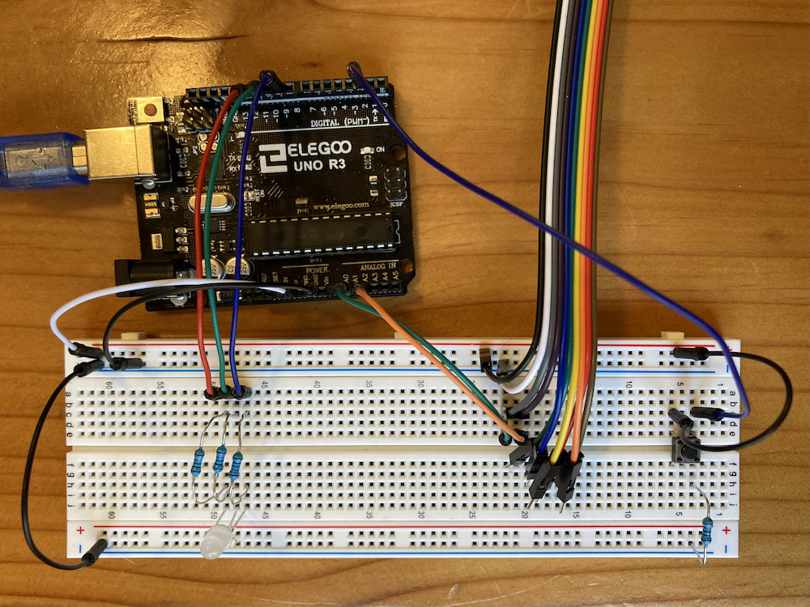

Assignment 6: Talking to the Web
"Stop calling, stop calling, I don't wanna talk anymore." — My Serial Monitor
March 01, 2021
This assignment had us configure a two-way connection between our Microcontroller and a web page. This was done using the serial monitor and some fancy communication with p5.serialControl. p5.js allowed us to read and manipulate that information in Javascript as well as send some data back.
I really wanted to work with the web for my final project, so I wanted this assignment to be the groundwork for what I will be doing as the quarter wraps up. My final projects centers around configuring color patterns for an RGB LED strip (beat that, TikTok Lights). I wanted users to be able to click on a color from a page and read that into RGB values to use in the microcontroller. I also wanted to use the joystick as a pseudo-cursor, since the mousepad is lame and this could be more fun.
For this assignment, I wanted to solve the basic two-way communication betwee nthe Arduino and the web, get the joystick pseudo-cursor working, be able to extract RGB values froma specific pixel, send the pixel back to the Arduino, and light up an RGB LED. Simple!
Arduino Code for the Setup
The code is split up into two parts this time: Arduino code and JS code. The Arduino code is rather quite simple; the first half of the code is sending joystick and switch code to the serial monitor, and the other half is reading input values from the serial and mappign them to an RGB LED.
/*
* Ben Olson
* 03/01/21
* This program sets up a joystick and switch that are used to send data over the serial monitor.
* Input is read over the serial monitor, where values are mapped to an RGB LED.
*/
// initializes pins
const int redPin = 11; // sets RGB red to 11
const int greenPin = 10; // sets RGB green to 10
const int bluePin = 9; // sets RGB blue to 9
const int SW = 2; // sets switch input to 2
int redInt; // stores the serial int for red value
int greenInt; // stores the serial int for green value
int blueInt; // stores the serial int for blue value
void setup() {
// initializes serial monitor to 9600 baud
Serial.begin(9600);
// sets color pins' mode to output
pinMode(redPin, OUTPUT);
pinMode(greenPin, OUTPUT);
pinMode(bluePin, OUTPUT);
// sets switch detector to input pullup to reduce static noise
pinMode(SW, INPUT_PULLUP);
}
void loop() {
int xPos = analogRead(1); // reads analog value from X position on joystick
int yPos = analogRead(2); // reads analog value from Y position on joystick
// prints x and y positions as coordinate array to serial monitor
Serial.print("[");
Serial.print(xPos);
Serial.print(",");
Serial.print(yPos);
Serial.println("]");
// if the switch is pressed
if (digitalRead(SW)) {
Serial.println("HIGH"); // print "HIGH" to the serial monitor
}
// delay reads for 100ms for each loop
delay(100);
// if there's serial data
if (Serial.available() > 0) {
redInt = Serial.parseInt(); // grabs first int from serial, always R value
greenInt = Serial.parseInt(); // grabs second int from serial, always G value
blueInt = Serial.parseInt(); // grabs third int from serial, always B value
// writes respective int values to pins, no need to map/constrain,
// as pixel range will always be between 0–255
analogWrite(redPin, redInt);
analogWrite(greenPin, greenInt);
analogWrite(bluePin, blueInt);
// sets delay between reading serial monitor
Serial.setTimeout(100);
}
}
Javascript Code for the Setup
The Javascript code is a lot more involved than the Arduino side. Here, the serial port has to be configured to talk to the web page. Using p5.js, we can draw with canvas elements and create and manipulate elements using JS only, no HTML. The majority of the incoming serial positions a cursor onto the page using the coordinates of the joystick.
One feature of the code is to check if the incoming values from the serial monitor are joystick coordinates or the switch turning on. If the switch is on, then it will send the RGB values of pixel to the serial from the pseudo-cursor's position.
/*
* Ben Olson
* 03/01/21
* This program communicates with the Arduino serial monitor to draw a pseudo-cursor made using
* coordinates from a microcontroller joystick. If a switch is pressed, the program extacts RGB
* values from the pixel using the pseudo-cursor's position on the page. The program then sends the
* RGB values back to Arduino via serial.
*/
var serial; // variable to hold an instance of the serialport library
var portName = '/dev/tty.usbmodem144101' // port that is connected to my microcontroller
var dataarray = []; // some data coming in over serial!
var click = false; // boolean tracking if the switch has been pressed
function setup() {
serial = new p5.SerialPort(); // make a new instance of the serialport library
serial.on('list', printList); // set a callback function for the serialport list event
serial.on('connected', serverConnected); // callback for connecting to the server
serial.on('open', portOpen); // callback for the port opening
serial.on('data', serialEvent); // callback for when new data arrives
serial.on('error', serialError); // callback for errors
serial.on('close', portClose); // callback for the port closing
serial.list(); // list the serial ports
serial.open(portName); // open a serial port
createCanvas(1023, 1023); // creates a canvas 1023px by 1023px
}
// get the list of ports:
function printList(portList) {
// portList is an array of serial port names
for (var i = 0; i < portList.length; i++) {
// Display the list the console:
print(i + " " + portList[i]);
}
}
// prints server connection success
function serverConnected() {
print('connected to server.');
}
// prints the serial port opened
function portOpen() {
print('the serial port opened.')
}
// prints if there's an error connecting to the serial port
function serialError(err) {
print('Something went wrong with the serial port. ' + err);
}
// prints that the port is closed
function portClose() {
print('The serial port closed.');
}
// main function that checks for serial input, on a loop
function serialEvent() {
// checks if there is data to be read
if (serial.available()) {
var datastring = serial.readLine(); // readin some serial
let dataparsed; // temp variable for processed serial data
// if the data = "HIGH", meaning the switch is turned on
if (datastring === "HIGH") {
click = true; // sets click to true
} else {
// else, the data is is coordinate form
try {
dataparsed = JSON.parse(datastring); // tries to parse the serial and assigns it to temp
} catch(err) {
console.log(err); // catches and prints errors to console
}
}
// if there is a coordinate and it's a valid object
if (dataparsed && typeof(dataparsed) == 'object') {
dataarray = dataparsed; // assigns values to processed array variable
// if the switch is on
if (click) {
sendPixel(dataarray); // sends pixel RGB values to Arduino
click = false; // resets switch tracker
}
}
}
}
// graphs the position of the pseudo-cursor using coordinates read from serial
function graphPosition(position) {
image(img, 0, 0, width, height); // redraws the image to avoid duplicating cursors
ellipse(position[0], position[1], 10, 10); // draws the pseudo-cursor using coordinate array
}
// predefines image variable
let img;
// preloads the image for faster processing when redrawing
function preload() {
img = loadImage('color-wheel-2.png'); // loads defined image in directory
}
// infinite loop that draws the pseudo-cursor
function draw() {
graphPosition(dataarray); // graphs position using the global coordinate array
}
// targets pixel based on pseudo-cursor position, then extracts RGB values from pixel and sends to Arduino
function sendPixel(position) {
// if the pixel color selected is not white (can omit for images not in full saturation)
if (get(position[0] - 10, position[1] - 10).toString() != [0,0,0,0].toString()) {
// grabs pixel from position
let pixel = get(position[0] - 10, position[1] - 10);
// offsets from pseudo-cursor position to avoid grabbing the cursor's color
serial.write(pixel[0] + ',' + pixel[1] + ',' + pixel[2]); // writes RGB values from pixel to the serial, values separated by commas
console.log(pixel[0] + '\n' + pixel[1] + '\n' + pixel[2] + '\n'); // logs RGB values to console
}
}
Getting the Circuit Up and Running
Usually, I like to do the schematic first. However, the three main components of this program (the joystick, the switch, and the RGB LED) are all straightforward, and I have done each of the components separately outside of this assignment. Hooking them up was no issue; the 10KΩ resistor on the switch is to limit and stabilize the current so we don't overload the Arduino. The 100Ω resistor is for blue, and 220Ω resistor is for red and green, as these values are the closest to their respective ideal resistances after voltage drop.
I originally didn't have the switch separate from the joystick. For some reason, my setup was not reading in any signal from the joystick build-in switch. I messed around with different pins, different code, and different wires (ended up breaking one), but to no avail. After getting the independent button to work, I concluded that my joystick switch was probably busted. Although it made me sad that my interaction wasn't confined in one neat little component, I was glad to finally solve that issue.
Drawing the Schematic
Kind of counterintuitive to make the schematic after the breadboard operation, but it was important to me to break up the circuit in chunks. Making sure the serial communication was working before hooking up the rest seemed logical to me, so I put off the circuit schematic until the very end. I also knew that I wasn't working with any high voltages, so I was hot-wiring my circuit as I went along. (I know, shame on me. However, sometimes I can't help it!)
Will the Web Answer My Call?
This one wasn't as much of a grand reveal as previous assignments, mostly because I had to make sure that the communication was working very early on before I started implementing more complicated components. However, seeing it all come together was still extremely satisfying:

I also tried capturing my screen during an test run, but the recording software doesn't seem to like capturing canvas elements updating every frame, so it's actually more choppy than the previous operation GIF.
This assignment felt really good to complete. There was a lot of hassle in debugging the serial communication: Most importantly, I had a really hard time troubleshooting, as printing messages to the serial monitor would for some reason mess up my incoming data from the web. I know that the two communicate over the same baud signal, but I always thought that the input and output channels were completely independent. Either way, I'm really glad to complete a major component of my potential final project!